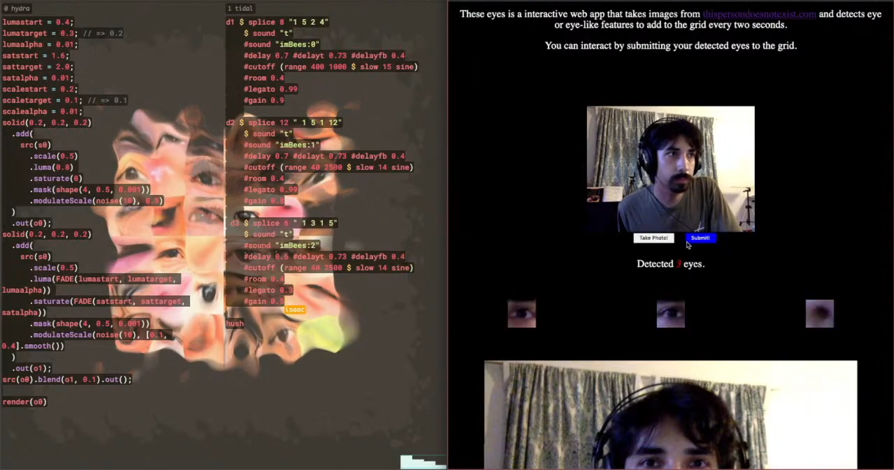

These-Eyes is a live coding performance with an interactive component from the viewers. A website is setup on Heroku to grab an image from https://thispersondoesnotexist.com periodically and scan it for eyes using OpenCV. These eyes are then constructed in a collage and presented on the top of the site and dynamically updated. Optionally, the public can submit their own detected eyes by turning on their webcam. This grid of eyes will be our visual material to be manipulated by us in real time using the live coding environment Hydra (https://github.com/ojack/hydra), while at the same time generating related bodily and electronic sounds using Tidalcycles (https://tidalcycles.org/index.php/Welcome).
Site: To be presented virtually as part of the Piksel20 Festival held in Bergen, Norway. November 19-22.